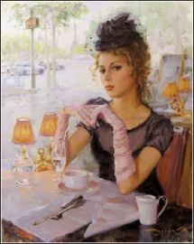
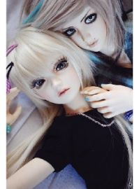

Припев:Ломаем стереотипы со скоростью дикойСкажи, Анжелика, где твой король?Ломаем стереотипы!На губы черникой,
Кружатся снежинки за окном.Рождество к тебе приходит в дом.Радость, сожаление, Каждое мгновениеНавсегда останется в сердце твоём.
Не всегда, не у всех получаетсяИногда половинки теряютсяЗасыпая, не там просыпаются где-тоЯ вошла, ты забыл про дыхание
Цей білий сніг дику гору обліг. Навіть сліду тут нема. Безлюдне неначе царство, а царюю я сама. І завиває вітер, хуга в серці зла.
Even when the thunder and storm begins I'll be standing strong like a tree in the wind Nothing's gonna move this mountain Or change my direction
Иногда все расстояния сильнее, чем любовь.И тогда одно желание - к тебе вернуться вновь.Дождём весенним в самом белом феврале

Припев:На стене в твоем подъезде я пишу тебе письмо,Начинаю на десятом, а закончу на восьмом.Ты обычная девчонка, я не принц и не герой,
А я уже давно потерял счёт дням -Сколько их прошло уже не знаю и сам.И почти не жду, что найду ответ -Ты была реальна или это мой бред?
Я его придумала и поверила,А когда увидела так и замерла.
Пусть стала свободной, лучше так,К тебе он холодный, но не враг,Простужена очень декабрём,Одна по ночам и для него.
Ты помнишь крылья за спиноюБыли, но остались навсегдаВ свете тех прекрасных юных дней.Ты помни, ты всегда со мною,Но обид по кругу не унять
All the crazy shit I did tonight those will be the best memories. I just wanna let it go for the night that would be the best therapy for me.
Почему кончается любовь ?Почему кончаются столетья ?Для чего я начинаюсь вновь ?И зачем, зачем живём на свете мы ?
Ледяной ветер в спину ударит,Ветер разлуки поможет проснуться.Нежный твой голос меня не обманет,Ты не заставишь меня оглянуться.
Припев:Давай закружим с тобойВ новогоднюю ночь,Как метели кружатУ тебя за окном,Мы проводим печаль,Как и прошлый год, прочь,
時の流れは無常であなたと私を引き離す愛を何度 叫んでも想い出だけは置き去りのまま心の闇に気付けなかった自分がいつまで経っても許せないお願い 助けて心が崩れて苦しい
辛子色のシャツ追いながら飛び乗った電車のドアいけないと知りながら 振り向けば隠れた街は色づいたクレヨン画 涙まで染めて走る年上の人に会う 約束と知っててSeptember そしてあなたはSeptember 秋に変わった
Чтобы кружилась голова, словаИ обнимают, как глаза, глазаИ если хочешь, не молчи в ночиКричи, кричиРазочарованный во мгле беглец
You’ve been my superstarBut it’s not what you areYou’ve been my super heroSince I’ve lived in your shadeEvery step that I made
Наступит утро, и своиВмиг лепестки распустит роза...Пусть нежные глаза твоиНе знают, что такое слезы.Пусть будет все, как хочешь ты.